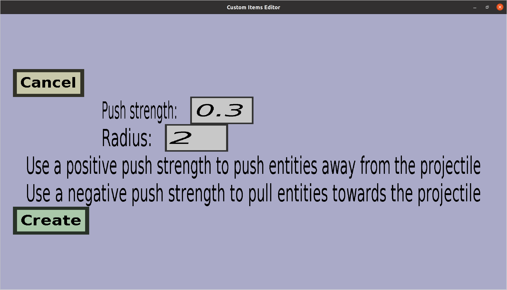

The push/pull projectile effect menu can be used to create or edit
push/pull projectile effects. These projectile effects will cause
entities that are close to the projectile to be pulled towards it or
pushed away from it (depending on how you configure it). The menu
should look like this:

-
Clicking the Cancel button will take you back to the menu you
came from, without keeping any changes made in this menu and without
adding a new push/pull projectile effect.
-
If you are adding a new push/pull effect, there will be a Create
button. Clicking it will add a new push/pull effect ot the projectile
with the configuration you made here.
-
If you are editing an existing push/pull effect, there will be an
Apply button. Clicking it will take you back to the menu you
came from and keep all the changes you made here.
-
The Push strength determines how hard nearby entities will
be pushed or pulled, and whether nearby entities will be pushed
or pulled. If it is positive, entities close to the projectile
will be pushed away from it. The amount determines how hard the
push will be. If this amount is 0.3, a velocity of magnitude 0.3
meters/tick (which is 6 meters per second) away from the projectile
will be added to the velocity of all nearby entities. If the amount
is negative, it will determine how hard nearby entities will be
pulled towards the projectile. If the amount is -0.3, a velocity of
magnitude 0.3 towards the projectile will be added to the velocity of
all nearby entities.
-
The Radius determines how close entities need to be to the
projectile in order to get pushed or pulled. If it is 2.0, only
entities that are at most 2.0 meters (blocks) away from the projectile
will be pushed or pulled.